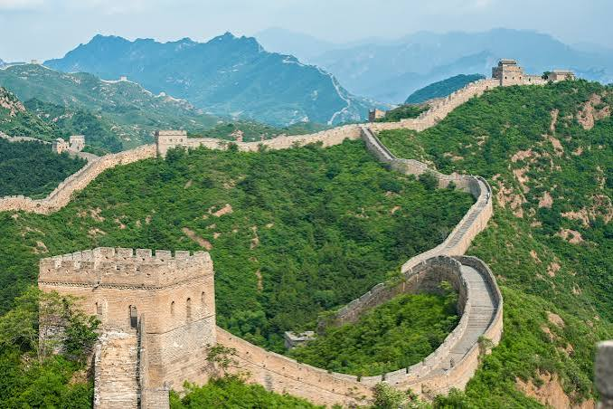
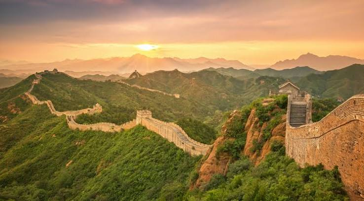
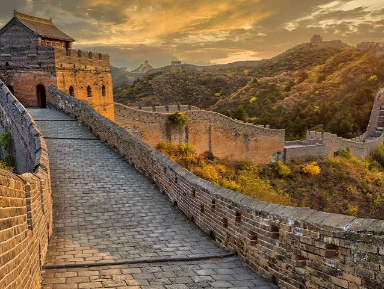

La Gran Muralla China es una monumental red de fortificaciones defensivas construida a lo largo de más de 2.000 años para proteger la frontera norte del Imperio chino. Es considerada una de las mayores obras de ingeniería de la humanidad y forma parte de las nuevas siete maravillas del mundo.

No es una línea continua, sino una red de fortificaciones, fosos y muros que suma 21.196 kilómetros de longitud. Tiene una altura media de 6 a 7 metros y un ancho de unos 4 a 5 metros. Su diseño estratégico incluye miles de torres de vigilancia.

Su conservación es crítica, ya que solo se mantiene en pie aproximadamente el 30% de la estructura original. Mientras que las secciones cercanas a Pekín (como Badaling o Mutianyu) están restauradas y reciben millones de turistas al año, más del 70% de la muralla sufre un grave deterioro. Las principales amenazas actuales son la erosión natural del desierto, el vandalismo, la falta de fondos en zonas rurales y la destrucción ilegal provocada por el desarrollo industrial y minero en la periferia.
